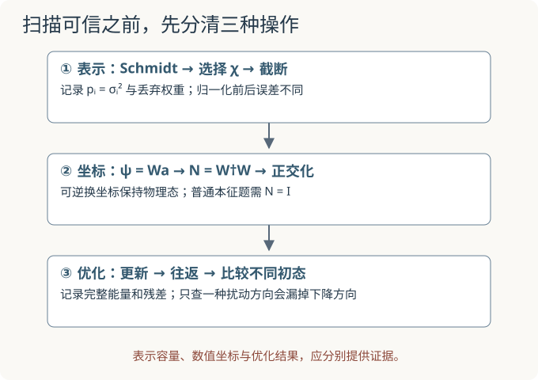

本页目录
学习路线 01 · 从 Schmidt 到变分扫描
建议顺序：张量网络与 Schmidt 谱 → MPS 范数与局部优化 → 四自旋往返扫描。Ising 奇偶谱提供精确对角化训练，但该课的周期边界不能直接套进本页开放链。目标是交出一份可复核的计算记录。
1. 四道入口题，分别检查四种能力
先在纸上作答，再展开答案。不要用“看过 MPS”替代以下具体证据。
| 入口题 | 应交的证据 | 卡住时回到哪里 |
|---|---|---|
| A：Schmidt 权重为 0.9、0.1，截到 χ=1，平方保真度是多少？ | 分清振幅、权重和归一化截断态 | Schmidt 与截断 |
| B：ψ=Wa 时，a†a=1 能保证物理态归一吗？ | 写出正确分母，并给出 N=I 的条件 | 范数与局部优化 |
| C：四站开放链有几条最近邻键？更新第 2 站应使用哪个第 1 站？ | Hamiltonian 与更新顺序明确 | 往返扫描 |
| D：局部残差为零，能宣布全局最优吗？ | 同一表示家族内的反例 | 扫描中的坐标陷阱 |
入口核对与回课建议
A：丢弃权重 ε=0.1；归一化截断态与原态的 overlap amplitude 为 \(\sqrt{0.9}\)，平方保真度为 0.9。B：不能；物理范数是 \(a^\dagger W^\dagger Wa\)，W 的列正交归一时 N=I。C：三条键；第 2 站必须使用刚更新后的第 1 站。D：不能；g=1、全体角度为 0° 时，每站都停住，但把全体角度改成 30° 就得到更低能量，仍是 χ=1 的态。
若 A、B 不会解释，先补相应页面再做下面的联合作业；若只在 D 卡住，从本页第三站开始，并保留同一模型和单位。

2. 先登记约定，避免把不同实验拼成一个系统
| 符号或操作 | 本路线约定 | 容易混淆的地方 |
|---|---|---|
| σᵢ 与 pᵢ | Schmidt 系数与其平方，pᵢ=σᵢ² | 熵用 pᵢ，丢弃权重也用 pᵢ |
| F 与 F² | 归一化态的重叠模与平方保真度 | 不把两种口径都简称“保真度” |
| χ | MPS 虚拟键维数 | 改坐标不增加 χ，QR 不等于截断 |
| ϑ | 下文两维坐标模型的基矢夹角 | 原实验滑块记 θ；它不是自旋 Bloch 角 |
| φⱼ、θ | 扫描态的各站 Bloch 角、统一初始角 | 单自旋振幅里用半角 φⱼ/2 |
| X、Z | Pauli 矩阵，本征值 ±1；J=1 | 若改用自旋算符 S=σ/2，要同步改系数 |
第一站检验表示，第二站检验坐标，第三站才优化四站能量。它们承担不同任务：第二站的两维 Hamiltonian 不是第三站四自旋 Hamiltonian 的同一个局部块，不能把两个实验的能量直接比较。
3. 第一站：一条切口上的误差能告诉你多少？
给归一化态
交卷要求。 写 χ=1 的未归一化截断态和归一化截断态，计算两种误差。解释能否据此得到任意 Hamiltonian 下的精确能量误差。
第一站题解：两种误差不能混用
未归一化截断态为 \(|\tilde\psi\rangle=\sqrt{0.9}|00\rangle\)，其范数平方为 0.9，与原态的差范数平方为 ε=0.1。归一化后为 \(|\hat\psi\rangle=|00\rangle\)，所以
截断丢弃权重 ε 与归一化后的态差范数平方不是同一个量。能量误差还依赖 Hamiltonian；仅凭 ε 不能报出一个通用的精确能量差。对长链也不能只检查一个切口便宣布所有切口都可精确表示；连续截断的误差需另作估计。
4. 第二站：让坐标变差，物理问题应不应该变？
固定
交卷要求。 令 λ=0，分别在 ϑ=90°、60°、30° 检查最低物理能量是否改变。列出 N 的条件数，解释 ϑ=0° 为何不属于同一可逆换坐标问题。
第二站题解：不变的是 Rayleigh 商的最小值
只要 \(\sin\vartheta\ne0\)，令 y=Ra，就有
λ=0 时，三个角度的最低物理能量都为 −1。\(\kappa_2(N)=(1+\cos\vartheta)/(1-\cos\vartheta)\)，因此分别为 1、3、\(7+4\sqrt3\approx13.9282\)。条件数变大不等于真实基态变低。
ϑ=60° 时忽略 N 得到普通最低本征值 \((−1−\sqrt{13})/4\approx−1.151388\)，违反 −1 的变分下界，原因是分母错误。ϑ=0° 时 R 降秩，不能再用可逆变换论证。实际数值实现还应检查近线性相关方向和分解稳定性。
先作预测，再核验。 本实验滑块用 θ 表示上文的坐标夹角 ϑ，λ 表示两维耦合。默认 θ=60°、λ=0.5：正确最低能量 −1.118034，忽略 N 的数值约 −1.541275，错误候选的实际能量约 −1.074769。请先把 λ 改为 0，再检查 90°、60°、30°。本题静态答案已列在上方。
无脚本时，按上方输入约定和可展开的完整题解核对静态计算。
5. 第三站：用新参数完成一次扫描记录
以下固定四站开放链
取 χ=1 的实乘积态，\(x_j=\sin\phi_j,z_j=\cos\phi_j\)。初始全体 θ=60°。交卷要求。 独立算出初始能量、第 1 站更新及更新后的完整能量，再运行两轮，记录轮数、残差与精确参照。另从 θ=0° 重跑。
第三站题解：先手算一站，再核对整个运行
初始 \(x_j=\sqrt3/2,z_j=1/2\)，所以 \(E=-3(3/4)-1.5(4/2)=-5.25\)。第 1 站仅有一个邻居，\(b_1=\sqrt3/2\)，局部最低本征值为
未涉及第 1 站的两条键贡献 −1.5，后三站横场贡献 −2.25，所以 \(E_{\rm env}=-3.75\)。完整能量为 \(-3.75-\sqrt3\approx-5.482050808\)。第 2 站接着使用 \(b_2=1/2+\sqrt3/2\)，不能仍用原始的 \(\sqrt3\)。
每轮顺序为 1→2→3→4→4→3→2→1。独立参照记录如下，数值单位都是 J：
| g | 初始 θ | 轮数 | 最终能量 | 局部更新残差 | 同一模型的精确 E₀ |
|---|---|---|---|---|---|
| 1.5 | 60° | 2 | −6.009574551 | 0.024270313 | −6.503891557 |
| 1.5 | 60° | 8 | −6.014395827 | 0.000943418 | −6.503891557 |
| 1.5 | 0° | 2 或 8 | −6 | 0 | −6.503891557 |
θ=0° 的残差虽更小，能量却更高。θ=60° 的两轮结果已经在同一 χ=1 家族中反驳了“零残差就是族内最优”。它仍未达到精确基态；单靠剩余能量差，无法分离表示限制和优化未完成的贡献。
复现实验。 默认是 g=1、θ=30°、两轮，最终能量 −4.403606895。请改为本题 g=1.5、θ=60°、两轮，再比较 8 轮及 θ=0°。记录输入后再记录输出，避免把默认设置的数值当作新题答案。无脚本时可用上表与第一站手算核验。
无脚本时，按上方输入约定和可展开的完整题解核对静态计算。
6. 退出题：统一转动没有降能，是否排除了陷阱？
仍取 g=1.5，从全体 φⱼ=0 出发。若只测试统一小角 φ，
统一小转动没有降低能量。现在独立判断：这能证明该点对所有乘积态扰动都是局部最小值吗？ 提示：四个站点不必转相同角度。
退出题推导：邻接矩阵给出漏测的下降方向
令四个小角组成向量 φ，展开完整能量：
其中 A 是四顶点路径的邻接矩阵，仅 \(A_{j,j+1}=A_{j+1,j}=1\)。记 \(\tau=(1+\sqrt5)/2\)，取 \(v=(1,\tau,\tau,1)^T\)。逐项乘法给出
因为 \(\tau^2=1+\tau\)。因此沿 φ=δv，二次能量改变量为 \(\tfrac12\delta^2(g-\tau)\|v\|^2\)。g=1.5 小于 τ≈1.618，所以足够小的非零 δ 会降能。δ=0.1 rad 时，直接计算得到 E≈−6.003946243，已低于 −6。
这说明统一方向的检查漏掉了非均匀方向。单站、统一多站、任意联合扰动是不同的检验范围。实验滑块只指定统一初始角，不能直接输入这组非均匀初值；本题的下降方向由上面的显式能量式手算或自行编程核验。
7. 最后提交什么，怎样判断需要回课？
交一份包含以下四项的记录，不以“跑了很多轮”代替论证：
- 表示记录：σ、p、χ、截断前后归一化与误差口径；第一站的两个误差必须分开。
- 坐标记录：N 与 H_eff 使用同一个 W；说明 QR 保持态与 SVD 截断改变态的区别。
- 运行记录：Hamiltonian、边界、单位、初态、更新顺序、轮数、完整能量和残差；精确参照必须属于同一个系统。
- 结论边界：给出族内反例，解释为什么稳定能量或零残差不足以保证全局最优，以及单一扰动方向会漏掉什么。
若截断误差混淆，回第一站；若能量低于精确下界，先核查范数和模型；若残差小但不同初值给出不同能量，回第三站；若只测试一种方向就宣布局部最优，重做退出题。
隔两三天闭卷复测：把 g 换成 1.6，用同一个 v 判断全零初态是否仍有联合下降方向。再说明这和单站更新停住是否矛盾。答案的关键是 1.6<τ，而不是机械重复 g=1.5 的数值。自行保存初答、错误理由与复测日期；本页不采集作答，也没有据此测出学习效果。
速查与下一步
完成本路线说明你能复核最小 MPS 优化链。一般 χ 还需要左右环境收缩、有效 Hamiltonian 作用、两站点更新、截断误差与收敛检查，不能由 χ=1 扫描自动覆盖。进一步读 Schollwöck 的 MPS／DMRG 综述，或返回张量网络课对照每一步的位置。
继续计算：MPS 环境与八维中心求解。
继续训练：两站点更新与 SVD 截断把环境、规范与 Schmidt 分解合在一次可复算更新中，并比较截断前后的物理能量。
继续训练：两站点完整往返逐步重建当前态的块基，记录候选接受与拒绝，并用非零残差识别能量停滞。
后续实现训练：正交中心与环境缓存，从完整小系统的验证走向真正存储与收缩 MPS 张量。
后续计算：MPO与Krylov把算符也组织成张量，通过 Hv 接口接回缓存扫描；显式局部残差与SVD丢弃权重分开检查。
后续诊断：全链方差与初态用双层MPO测H²，比较四个初态；两站点零方差激发态解释为何局部残差不能充当基态证书。